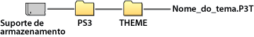

Definições > Definições de tema
Definições de tema
Ajuste as definições para personalizar XMB™ para itens como fundo ou tipo de letra do texto de ecrã.
Tema
Defina os elementos de design tais como os ícones ou o fundo apresentado no ecrã XMB™. Pode ajustar o tema utilizando qualquer um dos seguintes métodos.
Seleccionar um tema pré-instalado
Seleccione um tema que esteja pré-instalado no sistema PS3™.
Transferir um tema para o sistema PS3™
Quando transferir um tema da  (PlayStation®Store) ou utilizando um
(PlayStation®Store) ou utilizando um  (Navegador de Internet), esse tema será automaticamente instalado no sistema PS3™ após a conclusão da transferência.
(Navegador de Internet), esse tema será automaticamente instalado no sistema PS3™ após a conclusão da transferência.
Instalar um tema utilizando um disco de jogo ou software de vídeo Blu-ray Disc (BD-ROM) disponível no mercado
Para instalar e utilizar um ficheiro de tema contido neste suporte de disco, seleccione o ícone  debaixo de
debaixo de  (Jogo) e, em seguida, seleccione o ficheiro de tema que pretende instalar. O tema será utilizado como o tema do sistema automaticamente após a conclusão da instalação.
(Jogo) e, em seguida, seleccione o ficheiro de tema que pretende instalar. O tema será utilizado como o tema do sistema automaticamente após a conclusão da instalação.
Criar ou transferir um tema num PC
Quando transferir um tema de um Web site ou criar um tema utilizando um PC, crie uma nova pasta com o nome [PS3] - [THEME] no suporte de armazenamento e guarde o tema nessa pasta. Os ficheiros de tema devem ser guardados com a extensão [.P3T].

Para instalar o tema no disco rígido do sistema PS3™, ligue o suporte de armazenamento que contém o ficheiro de tema ao sistema e seleccione  (Definições) >
(Definições) >  (Definições de tema) > [Tema] > [Instalar].
(Definições de tema) > [Tema] > [Instalar].
Notas
- Um ícone que não faz parte do ficheiro do tema é substituído por outro ícone do ficheiro do tema ou permanece como o ícone de ecrã de XMB™ predefinido.
- Se um ficheiro de tema incluir diversos fundos, o fundo do tema irá mudar aleatoriamente.
- Está disponível software para o computador que lhe permite criar os seus próprios ficheiros de tema para utilizar no sistema PS3™. (É também necessário software disponível no mercado para a criação de elementos gráficos.) Para mais informações, visite o Web site da SCE da sua região.
- Em alguns modelos do sistema PS3™, é necessário um adaptador USB (não incluído) para usar suportes de armazenamento.
Eliminar temas
Seleccione o tema que pretende eliminar, prima o botão  e, em seguida, seleccione [Eliminar].
e, em seguida, seleccione [Eliminar].
Cor
Para definir a cor de fundo do ecrã XMB™.
| Original | Para definir a cor de fundo original. |
|---|---|
| (cor / amostra de cor) | Define a cor seleccionada como a cor de fundo. |
Fundo de ecrã
Para definir o fundo utilizado como papel de parede no tema ou na imagem seleccionada em  (Fotografia) como o fundo do ecrã XMB™.
(Fotografia) como o fundo do ecrã XMB™.
| Brilho | Para mudar o brilho do fundo. |
|---|---|
| Original | Para definir o tema original. |
| Clássico | Para definir o tema [Clássico]. |
| (nome do tema) | Para utilizar o fundo do tema definido em [Tema]. |
| Papel de parede | Para definir como fundo a imagem seleccionada como papel de parede em (Fotografia). |
Fonte
Defina a fonte a utilizar no ecrã XMB™ ou em mensagens em  (Amigos). Se o idioma do sistema estiver definido para coreano, caracteres de chinês simplificado ou caracteres de chinês tradicional, não é possível seleccionar esta definição.
(Amigos). Se o idioma do sistema estiver definido para coreano, caracteres de chinês simplificado ou caracteres de chinês tradicional, não é possível seleccionar esta definição.
Nota
As fontes que pode seleccionar variam consoante o idioma de sistema utilizado.